How LLMs Work
Prediction engines, not databases
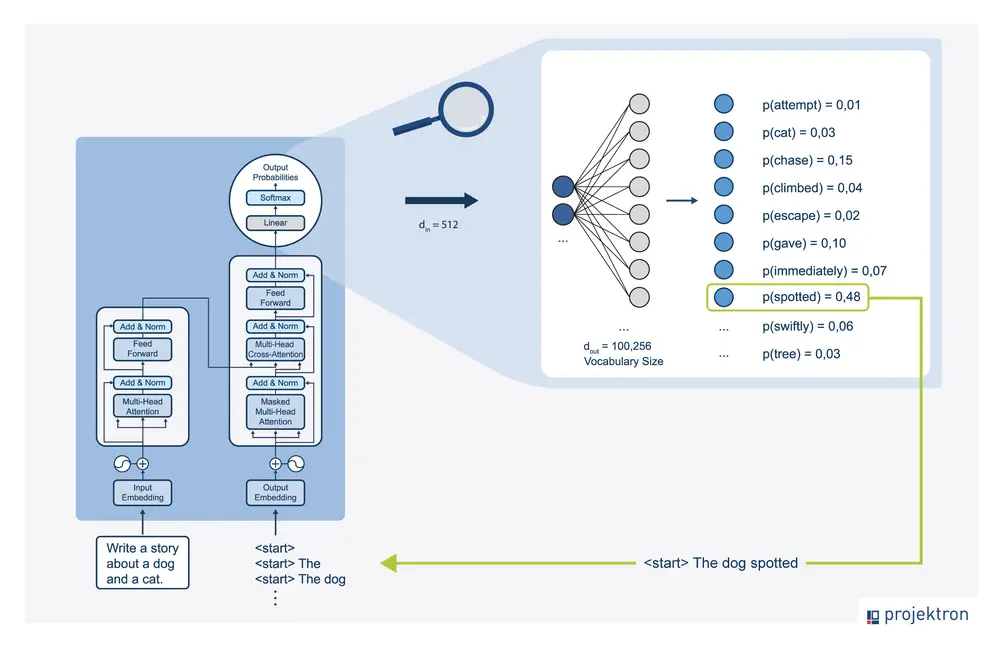Large language model as a prediction engine showing sequential token prediction process
Before we dive into prompting techniques, we need to understand how LLMs actually work. This is crucial because it explains why certain prompting techniques are effective.
An LLM is a prediction engine. It takes sequential text as input and predicts what the following token should be, based on the data it was trained on. The model does this over and over again, adding the previously predicted token to the end of the sequential text for predicting the following token.
The next token prediction is based on the relationship between what’s in the previous tokens and what the LLM has seen during its training. This is why context matters so much - the model uses the tokens you provide to predict what comes next.
When you write a prompt, you are attempting to set up the LLM to predict the right sequence of tokens. Prompt engineering is the process of designing high-quality prompts that guide LLMs to produce accurate outputs.
Prompt Engineering Defined
Designing high-quality prompts
Tinkering to find the best prompt
Optimizing prompt length
Evaluating writing style and structure
Matching prompts to tasks
Prompt engineering is the process of designing high-quality prompts that guide LLMs to produce accurate outputs. This process involves several key activities:
First, tinkering - you’ll try different phrasings, structures, and approaches to find what works best for your specific task. There’s no one-size-fits-all solution.
Second, optimizing prompt length. Longer prompts aren’t always better - you need to find the right balance between providing enough context and being concise.
Third, evaluating the writing style and structure in relation to the task. Different tasks require different approaches. A creative writing task needs different prompting than a data extraction task.
Finally, matching prompts to tasks. Prompts might need to be optimized for your specific model, regardless of whether you use Gemini, GPT, Claude, or an open source model like Gemma or LLaMA.
LLM Output Configuration
Controlling how the model generates
Output length
Temperature
Top-K
Top-P
Once you choose your model, you need to figure out the model configuration. Most LLMs come with various configuration options that control the LLM’s output. Effective prompt engineering requires setting these configurations optimally for your task.
These aren’t just technical details - they fundamentally change how the model behaves. Understanding these settings is as important as writing good prompts.
Output Length
Controlling response size
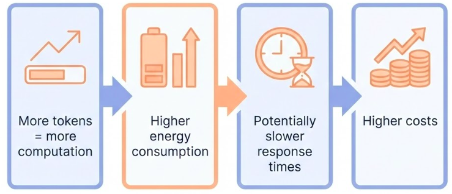Tokens and cost
An important configuration setting is the number of tokens to generate in a response. Generating more tokens requires more computation from the LLM, leading to higher energy consumption, potentially slower response times, and higher costs.
But here’s a crucial point: reducing the output length doesn’t cause the LLM to become more stylistically or textually succinct in the output it creates. It just causes the LLM to stop predicting more tokens once the limit is reached. If your needs require a short output length, you’ll also possibly need to engineer your prompt to accommodate.
Output length restriction is especially important for some LLM prompting techniques, like ReAct, where the LLM will keep emitting useless tokens after the response you want.
Be aware: generating more tokens requires more computation, leading to higher energy consumption and potentially slower response times, which leads to higher costs.
Sampling Controls
How tokens are selected
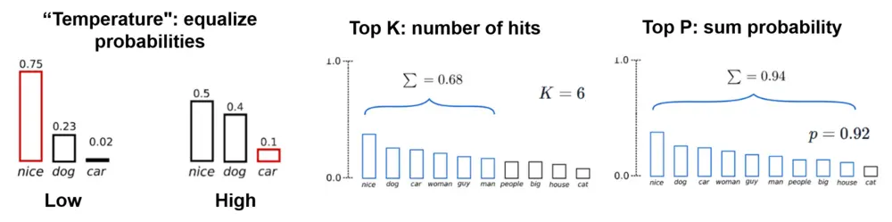Temperature, top-K, and top-P
Temperature : Control the randomness of the outputTop-K : Consider only the K most likely tokensTop-P (nucleus sampling) : Consider tokens whose cumulative probability exceeds P
LLMs predict probabilities for what the next token could be, with each token in the vocabulary getting a probability. Those probabilities are then sampled to determine the next produced token.
This is a key concept: LLMs don’t formally predict a single token. Rather, LLMs predict probabilities for what the next token could be, with each token in the LLM’s vocabulary getting a probability. Those token probabilities are then sampled to determine what the next produced token will be.
Temperature, top-K, and top-P are the most common configuration settings that determine how predicted token probabilities are processed to choose a single output token. Understanding these helps you control the randomness and creativity of your outputs.
Top-K and top-P (also known as nucleus sampling) are two sampling settings used in LLMs to restrict the predicted next token candidates.
Top-K restricts the sampling to only the K most likely tokens. If K is 10, the model only considers the top 10 most probable tokens, ignoring all others. This can help prevent the model from selecting very unlikely tokens.
Top-P, or nucleus sampling, considers tokens whose cumulative probability exceeds P. So if P is 0.9, the model considers tokens in order of probability until their cumulative probability reaches 90%, then ignores the rest. This is more dynamic than top-K because it adapts to the probability distribution.
Both methods help control the randomness and quality of outputs by focusing on more likely tokens.
Temperature
Controlling randomness
Low temperature (0) : Deterministic, highest probability token always selectedHigh temperature : More diverse or unexpected resultsVery high temperature : All tokens become equally likely
Temperature controls the degree of randomness in token selection. Lower temperatures are good for prompts that expect a more deterministic response, while higher temperatures can lead to more diverse or unexpected results.
A temperature of 0 (greedy decoding) is deterministic: the highest probability token is always selected. Note that if two tokens have the same highest predicted probability, depending on how tiebreaking is implemented you may not always get the same output with temperature 0.
Temperatures close to the max tend to create more random output. And as temperature gets higher and higher, all tokens become equally likely to be the next predicted token.
The Gemini temperature control can be understood in a similar way to the softmax function used in machine learning. A low temperature setting mirrors a low softmax temperature, emphasizing a single, preferred temperature with high certainty. A higher Gemini temperature setting is like a high softmax temperature, making a wider range of temperatures around the selected setting more acceptable.
General Prompting / Zero-Shot
Direct instruction without examples
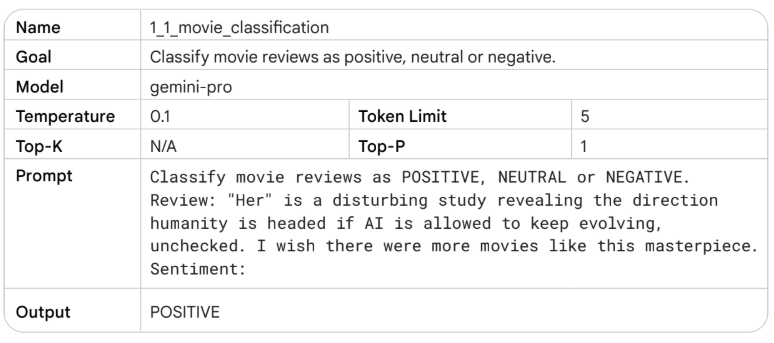Zero-shot prompting
Zero-shot prompting is the simplest form: you just ask the model to do something directly, without showing it any examples first. The model relies entirely on what it learned during training.
This works well for straightforward tasks that the model has seen many times during training: translation, summarization, classification, and so on. The model has internalized patterns for these tasks.
Zero-shot prompting is also called “general prompting” because it’s the most general approach - you’re not providing any task-specific examples or structure.
Use cases:
Translation
Summarization
Classification
Simple Q&A
However, zero-shot has limits. If the task is ambiguous, or if you need a specific format, or if the model needs to follow a particular style, zero-shot might not be enough. That’s when we move to few-shot.
One-Shot & Few-Shot Prompting
Instruction + examples
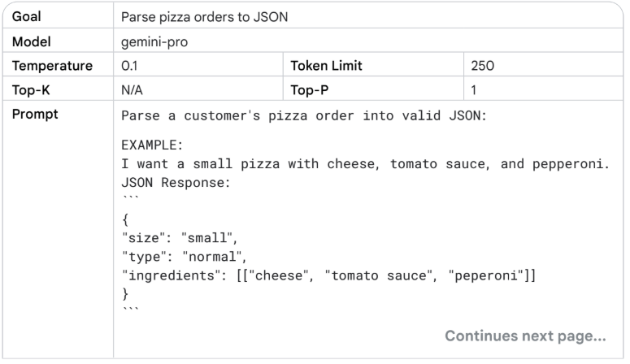One-Shot & Few-Shot Prompting
Few-shot prompting adds examples to your instruction. You show the model a few examples of the task you want it to perform, then ask it to do the same thing for a new input.
One-shot is a special case of few-shot with exactly one example. Few-shot typically uses 2-5 examples.
This is incredibly powerful because it lets you specify exactly what you want without having to describe it in words. Instead of saying “translate to formal Arabic,” you just show a few examples of formal Arabic translations, and the model picks up the pattern.
What’s happening under the hood? The model is doing pattern recognition. It sees the examples and identifies the pattern: “Oh, I see - for each English phrase, there’s a corresponding Arabic phrase. And the style is formal. And the format is numbered list with arrow.”
This is why few-shot works so well - it’s showing, not telling. You’re demonstrating the task rather than describing it. And neural networks are excellent at learning from demonstrations.
But there’s a limit. Too many examples can confuse the model or hit token limits. Usually 2-5 examples is the sweet spot. And the examples need to be representative - if all your examples are simple cases, the model won’t handle complex cases well.
System Prompting
Persistent context and behavior
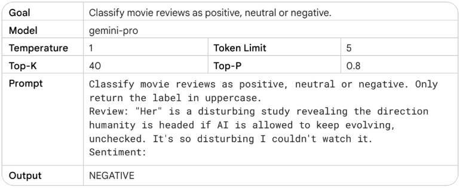System Prompting
System instructions are persistent instructions that apply to the entire conversation. Unlike regular prompts that are specific to one request, system instructions set the overall behavior and context.
Think of system instructions as the “personality” or “role” of the assistant. You’re telling the model: “For this entire conversation, act like this, follow these rules, use this style.”
This is essential for building applications. If you’re building a customer service bot, you want it to be polite and helpful in every interaction, not just when you remember to add “be polite” to each prompt. System instructions let you set that once and have it apply everywhere.
System prompting is different from role prompting - system prompts set general behavior, while role prompts define a specific persona or expertise area.
Role Prompting
Defining expertise and perspective
You are a Python programming tutor with 10 years
of experience. Explain concepts clearly and
provide code examples.Use cases:
Domain expertise
Perspective setting
Style consistency
Role prompting defines a specific role, persona, or expertise area for the model. Instead of just setting general behavior, you’re telling the model to act as a specific type of person or expert.
This is powerful because it leverages the model’s training data about how different roles communicate. A Python tutor will explain things differently than a data science consultant, even for the same topic.
Role prompting helps with:
Domain expertise: The model will draw on knowledge patterns associated with that role
Perspective setting: Different roles have different perspectives
Style consistency: Roles have consistent communication styles
The key is being specific. “You are a tutor” is vague. “You are a Python programming tutor with 10 years of experience who specializes in teaching beginners” is much better.
Contextual Prompting
Providing relevant background
Context: The user is working on a machine learning
project using scikit-learn. They have a dataset
with 10,000 samples and 50 features.
Question: What preprocessing steps should I take?
Contextual prompting provides relevant background information that helps the model understand the situation and provide more appropriate responses.
This is different from system or role prompting because the context is specific to the current task or conversation, not a persistent setting. You’re providing situational information that helps the model tailor its response.
Contextual prompting is especially important when:
The task requires domain-specific knowledge
The answer depends on specific circumstances
You want the model to consider multiple factors
The key is providing relevant context without overwhelming the model. Too much context can confuse the model or dilute the important information. Too little context can lead to generic or inappropriate responses.
Step-Back Prompting
Evoking reasoning via abstraction
Instead of asking directly, first ask the model to step back and think about the broader principles or concepts.
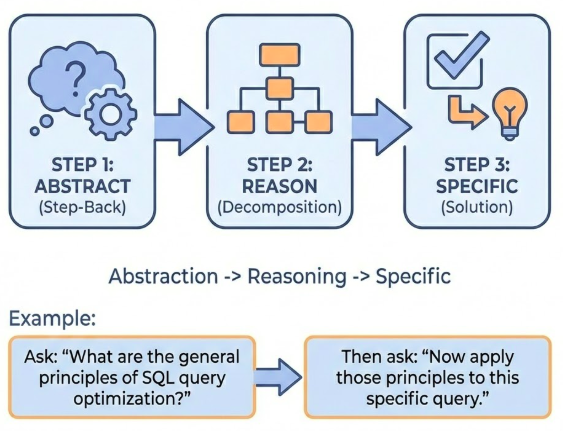Step-back prompting showing abstraction before specific reasoning
Step-back prompting is a technique where you first ask the model to step back and think about broader principles or concepts before addressing the specific question. This helps the model reason more effectively by working at a higher level of abstraction first.
The idea is that by first understanding the general principles, the model can then apply those principles more effectively to the specific problem. This is similar to how humans often solve problems - we think about general strategies before diving into specifics.
For example, instead of asking “How do I optimize this specific SQL query?”, you might first ask “What are the general principles of SQL query optimization?” and then “Now apply those principles to this specific query.”
This technique is particularly effective for complex reasoning tasks where the model needs to understand underlying principles before solving the specific problem.
Chain of Thought (CoT)
Adding reasoning steps
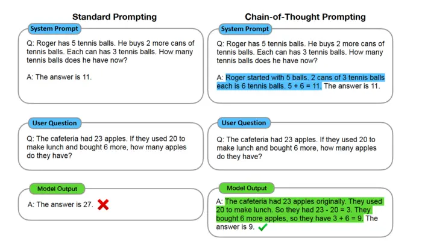Chain of thought prompting showing step-by-step reasoning process
Chain-of-thought prompting asks the model to show its reasoning process, step by step. Instead of just giving an answer, the model explains how it got there.
This is crucial for complex reasoning tasks. Math word problems, logic puzzles, multi-step planning - these all benefit from chain-of-thought because the model is forced to break down the problem into steps, and you can see if those steps make sense.
But chain-of-thought isn’t just for math. It works for any task that requires reasoning: analyzing a business problem, debugging code, planning a project. When you ask the model to “think step by step,” it often produces better results because it’s not jumping to conclusions.
Chain-of-thought works because it forces the model to be explicit about its reasoning. Instead of jumping from problem to answer, it has to show the intermediate steps. This often improves accuracy because the model is less likely to make calculation errors when it shows its work.
For CoT prompting, putting the answer after the reasoning is required because the generation of the reasoning changes the tokens that the model gets when it predicts the final answer. Also, set the temperature to 0 for CoT, as it’s based on greedy decoding.
Self-Consistency
Multiple reasoning paths
Generate multiple chain-of-thought reasoning paths, then select the most consistent answer.
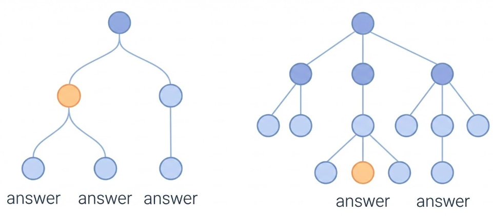Self-consistency showing multiple reasoning paths converging on answer
Self-consistency is an extension of chain-of-thought prompting. Instead of generating one reasoning path, you generate multiple chain-of-thought reasoning paths, then select the most consistent answer.
The idea is that if multiple reasoning paths lead to the same answer, that answer is more likely to be correct. This is similar to ensemble methods in machine learning - multiple models often perform better than a single model.
To use self-consistency:
Generate multiple chain-of-thought responses (with temperature > 0)
Extract the final answers from each response
Select the answer that appears most frequently
This technique improves accuracy on reasoning tasks because it reduces the impact of errors in individual reasoning paths. If one path makes a mistake but others don’t, the correct answer will still be selected.
Self-consistency is particularly effective for tasks where there’s a clear right answer, like math problems or factual questions.
Tree of Thoughts (ToT)
Exploring multiple reasoning branches
Instead of linear reasoning, explore multiple reasoning branches and select the best path.
Tree of thoughts showing branching reasoning exploration
Tree of Thoughts (ToT) is an advanced prompting technique that goes beyond chain-of-thought. Instead of following a single linear reasoning path, ToT explores multiple reasoning branches and selects the best path.
The process works like this:
Generate multiple possible next steps (thoughts)
Evaluate each thought
Select the most promising thoughts to expand
Repeat until reaching a solution
This is similar to how humans solve complex problems - we consider multiple approaches, evaluate them, and pursue the most promising ones.
ToT is particularly useful for:
Complex planning tasks
Problems with multiple valid approaches
Tasks where exploration is beneficial
However, ToT is more computationally expensive than chain-of-thought because it generates and evaluates multiple reasoning paths. It’s best used for complex problems where the additional exploration is worth the cost.
ReAct (Reason & Act)
Synergizing reasoning and acting
The model alternates between reasoning (thinking) and acting (taking actions like tool use).
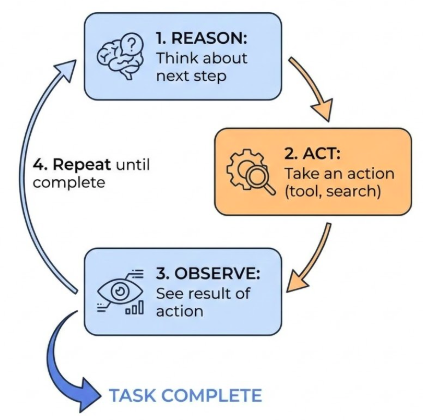ReAct pattern showing alternating reasoning and action steps
ReAct (Reason & Act) is a prompting technique that synergizes reasoning and acting in language models. The model alternates between reasoning steps (thinking about what to do) and acting steps (taking actions like using tools, searching, or executing code).
This is particularly powerful for tasks that require:
Tool use (searching, calculating, executing code)
Multi-step problem solving
Dynamic decision making
The ReAct pattern works like this:
Reason : Think about what to do nextAct : Take an action (use a tool, search, etc.)Observe : See the result of the actionRepeat until the task is complete
This pattern is especially important for agent systems where the model needs to interact with external tools or systems. It allows the model to plan, execute, and adapt based on results.
Note: For ReAct, output length restriction is especially important because the LLM will keep emitting useless tokens after the response you want if not properly controlled.
Automatic Prompt Engineering
Using LLMs to improve prompts
LLMs can be used to automatically generate, refine, and optimize prompts.
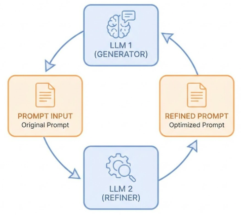Automatic prompt engineering showing LLM improving its own prompts
Automatic Prompt Engineering is a meta-technique: using LLMs to improve prompts. Instead of manually crafting prompts, you can use an LLM to generate, refine, and optimize prompts.
This works by:
Providing the LLM with examples of good prompts and their results
Asking the LLM to generate new prompts for a task
Testing the generated prompts
Refining based on results
This is particularly useful for:
Finding optimal prompt structures
Discovering effective phrasings
Adapting prompts to new tasks
Scaling prompt engineering efforts
The key insight is that LLMs have learned patterns about effective communication from their training data, so they can apply those patterns to create better prompts.
However, automatic prompt engineering still requires human oversight and evaluation. The LLM can suggest improvements, but you need to verify that they actually work better.
Keytakeaways
Your complete toolkit
Zero-shot : Simple, well-known tasksFew-shot : Specific formats and stylesSystem/Role/Contextual : Setting behavior and contextChain-of-thought : Complex reasoningSelf-consistency : Validating resultsTree of Thoughts : Exploring good thought trajectoriesReAct : Reasoning with actions
Let’s bring it all together. You now have a complete toolkit for prompting:
Use zero-shot for straightforward tasks that the model knows well. Use few-shot when you need specific formats or styles. Use system, role, and contextual prompting to set behavior and provide background. Use chain-of-thought for complex reasoning problems. Use self-consistency to improve accuracy. Use Tree of Thoughts for exploring multiple reasoning paths. Use ReAct for tasks requiring tool use and dynamic decision making. And use code prompting for all aspects of working with code.
The key is matching the technique to the task. Don’t overcomplicate simple tasks with advanced techniques, and don’t under-specify complex tasks with basic prompting.
In the next session, we’ll learn how to evaluate whether your prompts are actually working well, and how to get structured outputs that are easier to work with programmatically.